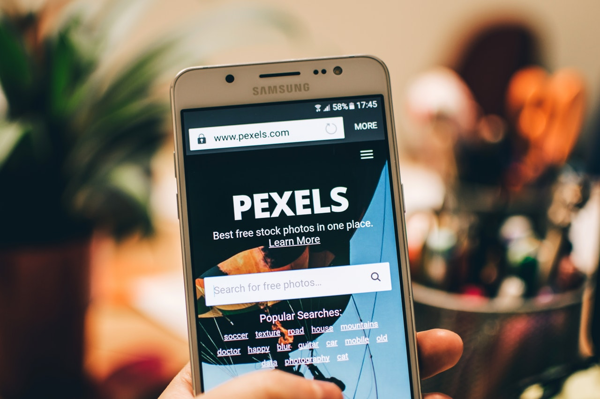
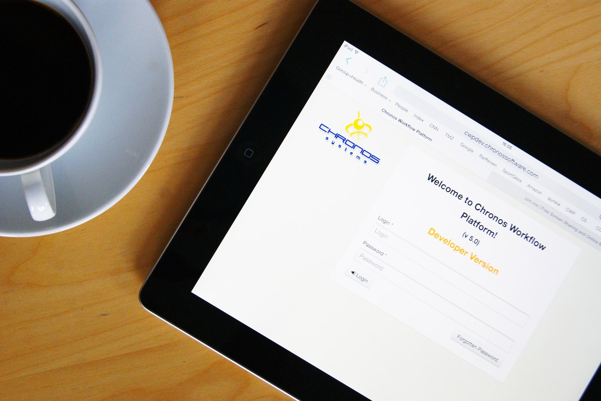
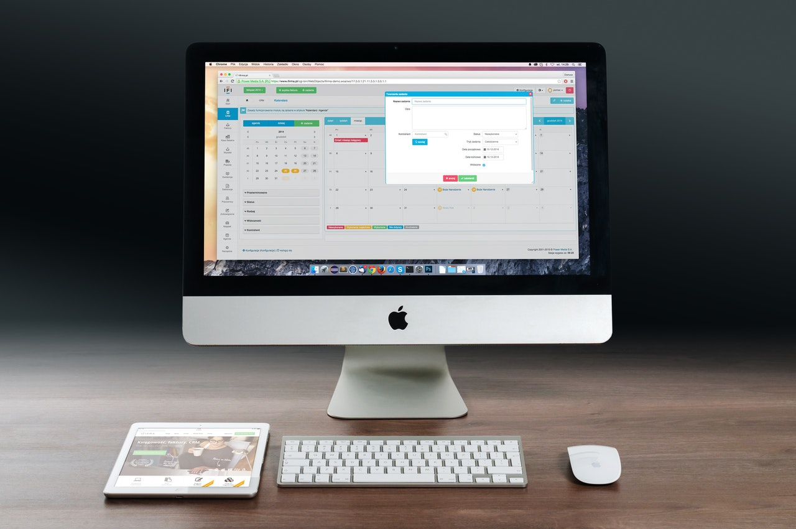
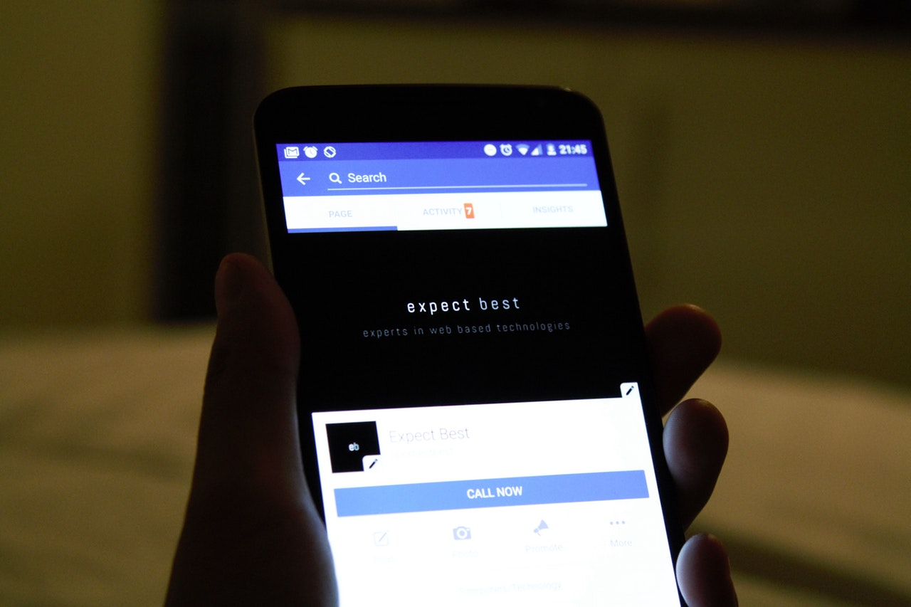

Archivo de trabajo
Exploraciones digitales, de principio a fin.
Una selección visual de interfaces, sistemas y experimentos construidos alrededor de problemas concretos.




Código abierto
Archivo de trabajo
Una selección visual de interfaces, sistemas y experimentos construidos alrededor de problemas concretos.




Código abierto